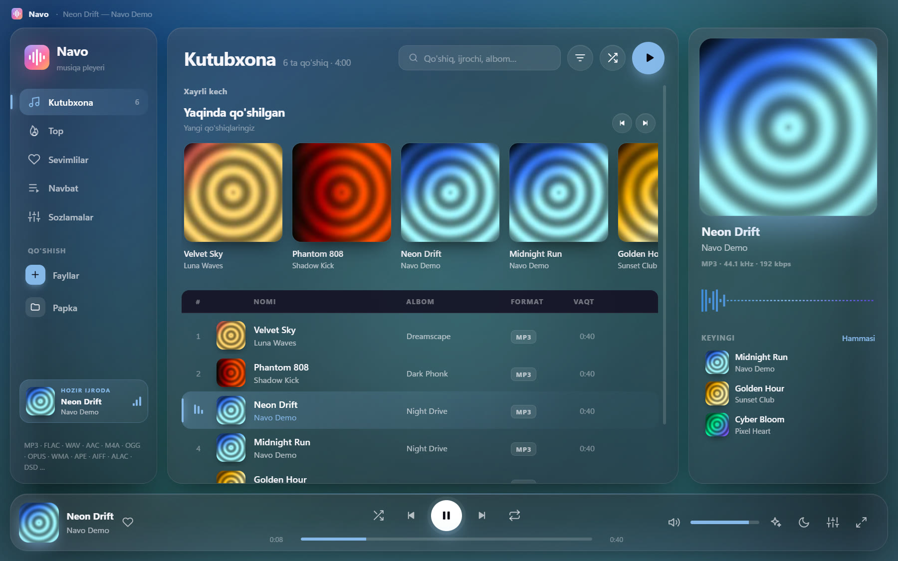
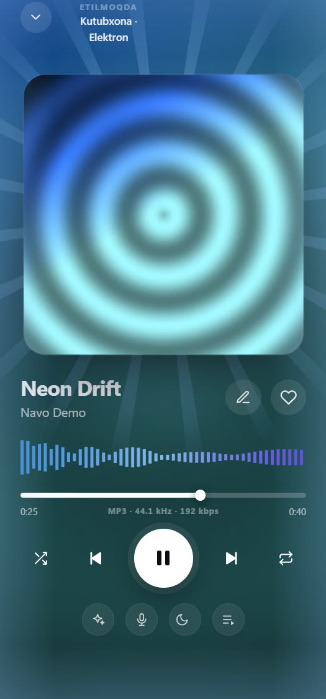
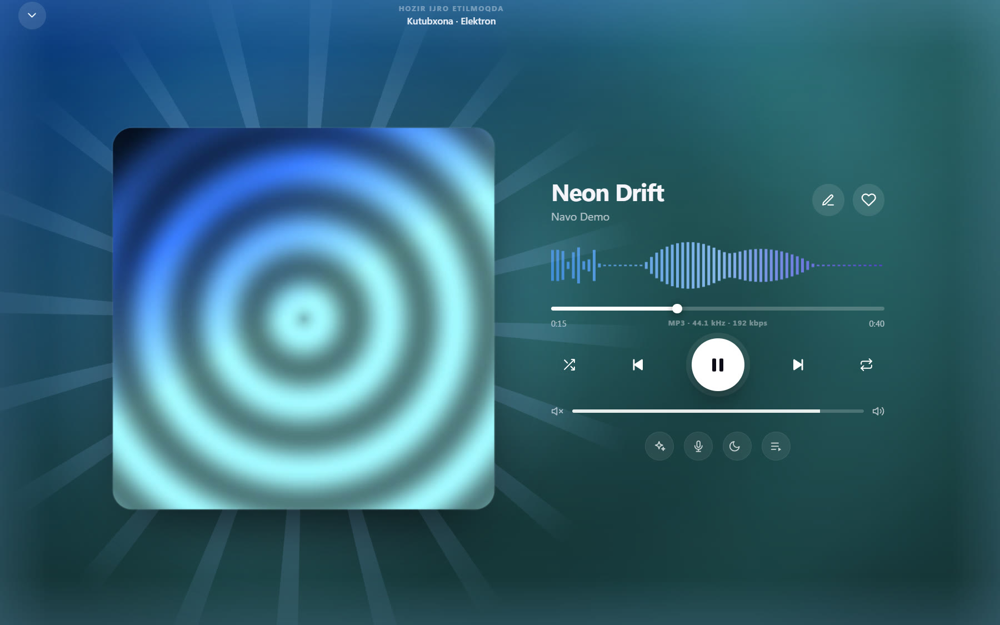
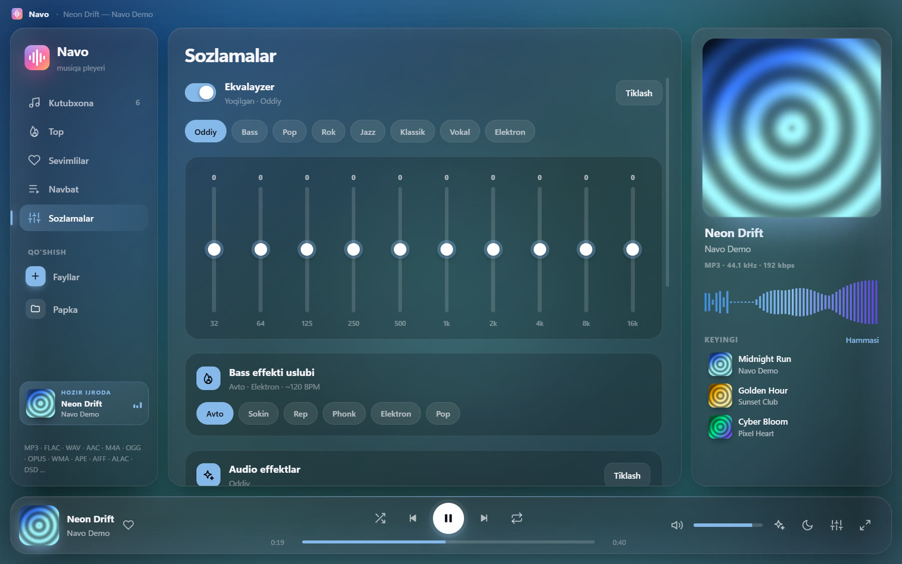
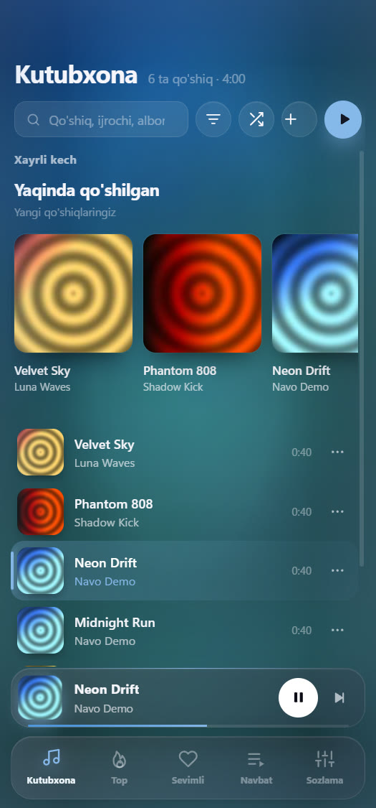

Bass bilan sinxron effektlar
Navo qo'shiqni oldindan tahlil qiladi va har bir 808 zarbasini millisekundigacha topadi. Drop kelganda — to'lqinlar muqova ortidan otilib chiqadi, ekran chaqnaydi. Sokin qismlarda esa jim turadi.
Navo — barcha formatlarni o'ynaydigan, har bir bass zarbasi bilan birga "nafas oladigan" premium musiqa pleyeri. Reklama yo'q, ro'yxatdan o'tish yo'q.


Musiqa tinglashni tajribaga aylantiradigan hamma narsa — bitta yengil ilovada.
Navo qo'shiqni oldindan tahlil qiladi va har bir 808 zarbasini millisekundigacha topadi. Drop kelganda — to'lqinlar muqova ortidan otilib chiqadi, ekran chaqnaydi. Sokin qismlarda esa jim turadi.
Phonk, rep, elektron yoki sokin musiqa — har biriga o'z effekti. Tempi va bassiga qarab avtomatik.
Istalgan qo'shiqni bir tugma bilan sekinlashtiring, aks-sado qo'shing yoki ovozni boshingiz atrofida aylantiring.
Karaoke uslubida — matn qo'shiq bilan birga yuradi. Slowed versiyalarda ham vaqt avtomatik moslashadi.
MP3, FLAC, WAV, M4A, OGG, OPUS — hamda Windows'da WMA, APE, AIFF, ALAC va DSD ham.
Rasmi yo'q qo'shiqlarga muqova internetdan avtomatik qo'yiladi. Xohlasangiz o'zingiz rasm va nom bering.
Eng ko'p tinglaganlaringiz, jami tinglash vaqti va sevimli ijrochingiz — hammasi bir joyda.
Bass, Pop, Rok, Jazz va boshqa tayyor sozlamalar yoki o'zingizning ovozingiz.
Musiqa sekin pasayib, o'zi to'xtaydi. 15 daqiqadan 1.5 soatgacha yoki qo'shiq oxirida.
Muqova bass bilan sakraydi, orqasidan yorug' to'lqinlar tarqaladi, nurlar aylanadi. Hammasi videokartada ishlaydi — monitoringiz 60, 144 yoki 240 Hz bo'lsa ham silliq.



O'rnatuvchi · ish stoli yorlig'i va musiqa fayllarini to'g'ridan-to'g'ri Navo'da ochish ("Open with").
Yuklab olish · .exe Windows 10 / 11 (64-bit) · ~83 MBO'rnatishsiz — fleshkadan yoki istalgan papkadan ishga tushadi.
Yuklab olish · .exe Windows 10 / 11 (64-bit) · ~77 MBAppImage — istalgan distributivda ishlaydi. Ubuntu/Debian uchun .deb paket ham bor.
Yuklab olish · AppImage yoki .deb (Ubuntu / Debian) 64-bit · ~78 MBTelefon uchun APK · fonda ijro, bildirishnomada boshqaruv tugmalari.
Yuklab olish · .apk Android 6.0+ · ~3 MBchmod +x Navo.AppImage.Ha, butunlay bepul. Reklama yo'q, obuna yo'q, ro'yxatdan o'tish ham shart emas.
Yo'q. Musiqangiz kompyuter yoki telefoningizdan ijro etiladi. Internet faqat muqova va qo'shiq matnini topish uchun ishlatiladi — buni sozlamalarda o'chirib qo'yish mumkin.
Windows'da: MP3, FLAC, WAV, M4A/AAC, OGG, OPUS, WMA, APE, WavPack, AIFF, ALAC, DSD (DSF/DFF), AC3 va boshqalar. Android'da: MP3, FLAC, WAV, M4A/AAC, OGG va OPUS.
Raqamli imzo sertifikati pullik bo'lgani uchun ilova hozircha imzolanmagan. Kod to'liq ochiq — uni GitHub'da ko'rishingiz mumkin.
Barcha effektlar videokartada ishlaydi. Juda sust qurilmalarda Navo o'zi "yengil rejim"ga o'tadi, xohlasangiz sozlamalardan effektlarni o'chirishingiz mumkin.